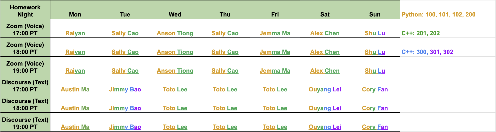

Platform Training
X-Camp uses four main platforms. You need to be set up on all of them before your first shift.
📱 The Four Platforms
💬 Lark
Internal communication — Messenger, Docs, Calendar, Tasks. This is how you stay in sync with the team.
📚 learn.x-camp.org
The learning site — courseware, slides, homework, recordings. Where you access all teaching materials.
💭 Discourse
The forum where students post homework questions and receive help from TAs. Central to HWN.
📹 Zoom
Used for HWN, 1 on 1 OH, and classes. You'll need to know the key host controls.
For detailed setup instructions and tutorials, follow the full platform training doc:
Full Platform Training Document
Lecturer Platform Training — Lark Docs →✅ Platform Training Checklist
Complete every item before moving on. If you get stuck, contact Kevin for platform/access issues.
💬 Lark
- Lark app installed and logged in
- Found and joined the New Lecturers training groupchat
- Written a self-introduction and posted it in a Lark group
- Created a test calendar event and deleted it
📚 Learning Site
- Logged into learn.x-camp.org with credentials provided during onboarding
- Found your assigned course(s) under My Classes
- Located slides, homework, and hint/solution videos for your level
- Know how to check student submission records
💭 Discourse
- Logged into x-camp.discourse.group
- Pinned your level categories in the sidebar
📹 Zoom
- Zoom installed and updated to the latest version
- Set X-Camp background image for teaching sessions
📚 X-Camp TA Onboarding Guide
Everything you need to get started as an X-Camp TA — follow the steps below in order.
Your Training Path
Platform Training
⚡ Complete this first — required before anything else
TA Role Training
Read the section(s) matching your assignment below
Submit Completion Form
After finishing all assigned sections
Step 2 — Jump to your assigned section:
Read the sections that match your assignment. Use the top tabs to switch between sections anytime.
📞 Who to Contact
The X-Camp Student Support System
When students get stuck on homework, they have two ways to get help.
🌙
Homework Night (HWN)
Every day, 5:00–8:00 PM PT. Students post on Discourse and ask questions by voice in Zoom. Multiple TAs handle volume in real time. Fast-paced, requires coordination.
🗓
1 on 1 Office Hours
Students book individual sessions in advance — Conceptual, Debugging, Code Review, or Catch-up. Slower-paced, deeper focus, requires TA preparation.
The two channels complement each other — HWN handles most common questions, and 1 on 1 OH handles situations that need deeper, focused work.
Your Goal
Platform Training is required before this section. If you haven't done it yet, start here →
The goal of HWN is not to answer every question completely. It is to make sure every student who comes for help leaves with a clear next step.
That means
You do not need to fully resolve every problem. Guiding students to the right direction and handing off cleanly is doing your job well.
Roles in HWN
Each HWN shift has three roles. You will be assigned to one of them. Click a role to see its responsibilities.
📊 Level Coverage by Role
Refer to the HWN schedule below to see which TA covers which level on your shift.
| Role | Typical coverage |
|---|---|
| 🎙 Zoom (Voice) Teacher | Python: 100, 101, 102 · Python/C++: 200, 201, 202 |
| 💬 Discourse (Text) Teacher | Python: 100, 101, 102 · Python/C++: 200, 201, 202 · C++: 300, 301, 302+ |
📅 HWN Schedule — Spring 2026

🧠 Quick Check
Make sure you understand the roles before your first shift.
Q1. A student posts their Discourse link in Zoom chat. You're the Zoom Teacher but the question is beyond your level coverage. What do you do?
Q2. You are the Discourse Teacher and the Zoom Teacher @ tags you on a question. What is your first response?
Q3. You answered a student by voice in Zoom and the issue is fully resolved. What tag do you apply to their Discourse post?
Judge Verdicts — Quick Reference
When students submit code to the online judge, they get one of these verdicts. You'll see these terms constantly in HWN.
| Verdict | Full name | What it means |
|---|---|---|
| AC | Accepted | Code is correct and passed all test cases |
| WA | Wrong Answer | Code runs but produces incorrect output on at least one test case |
| CE | Compile Error | Code has syntax errors and couldn't be compiled |
| RE | Runtime Error | Code compiled but crashed during execution (e.g. index out of bounds, stack overflow) |
| TLE | Time Limit Exceeded | Code is too slow and didn't finish within the allowed time |
| MLE | Memory Limit Exceeded | Code used more memory than allowed |
🧠 Quick Check
Make sure you know your verdicts.
Q1. A student says their code compiles and runs, but gives the wrong answer for some inputs. What verdict is this?
Q2. A student gets TLE. What is the most useful first question to ask?
Q3. What is the difference between RE and CE?
How to Handle a Question
Step 1 — Identify the question type
| Type | What it looks like | Your first move |
|---|---|---|
| Don't understand | Can't follow the problem statement | "What specifically don't you understand — the description, or the sample data?" |
| No idea | No approach at all | "How long have you been thinking about it?" |
| Implementation | Has a plan but can't write it | "What have you tried? Where exactly are you stuck?" |
| CE | Compile error | "Have you looked at the compiler's error message?" |
| WA | Wrong answer | "Have you found the test case where your output is wrong?" |
| RE | Runtime error | "Do you know where in the code the program crashes?" |
| TLE | Time limit exceeded | "What algorithm are you currently using?" |
| MLE | Memory limit exceeded | "What data structure are you using to store the data?" |
Step 2 — Use rounds when multiple students are waiting
This way, no student is left waiting in silence for a long time.
Step 3 — Decide whether to hand off
If a question is clearly outside your level coverage, don't force it. @ the correct Discourse TA and let the student know in Zoom chat that the right TA is looking at their post.
Language Reference & Case Studies
Useful Phrases
Copy these directly or adapt them to your style.
Ask how long they've been thinking about it first. Then give the smallest useful nudge based on the problem type (e.g. "This is a tree problem — start by thinking about how to build the tree"), not the full solution.
Don't pretend to be handling it and give a vague direction. Being honest is better than a misleading answer.
Case Studies
Click a case to expand it.
Amy posted a 200-level DP problem on Discourse. She pasted 60 lines of code with no comments and said "my code is WA."
- Reply "Looking" and change the tag to Replied
- Send: "There are many ways to solve this. Could you write out your solution logic in English first? What is each section of your code trying to do?"
- Once she explains her approach, you can see exactly where her thinking went wrong and guide her from there.
Ben sends his Discourse link in Zoom chat. At the same time, the Discourse TA sees the new notification and starts looking at it too.
- Zoom Teacher sees Ben is 200-level, outside their coverage, and @ the Discourse TA
- Discourse TA replies "Looking" in Zoom and takes over
- Zoom Teacher tells Ben: "Our 200-level TA is looking at your post now"
Only one TA handles any given question at a time.
Carol is a 201-level student, but the problem she's asking about is clearly 300-level material.
- Don't attempt an answer you're not confident in
- Tell Carol: "This problem looks like it's from the 300-level curriculum. I'll flag it for our team — someone will follow up within 24 hours."
- Let the other TAs or Manager know in the group so the right person can follow up
David asks a question. You give him a nudge. He immediately asks "so what do I do next?" — without having tried anything.
- After the second follow-up without any attempt, pause: "Before I continue — what have you tried based on what I just said?"
- If he hasn't tried anything: "Go ahead and try implementing that part first. Come back if you're still stuck — I'll be here."
- Don't let student impatience push you into skipping the guided learning process.
One Wednesday evening, another TA is absent and you're handling 8 students alone.
- Don't try to fully resolve any one question first — use rounds, give every student a quick "Looking" + one-line nudge
- For deeper debugging: "This will take more time — I'll come back to you after checking in with everyone."
- For questions you can't cover: "Your post will be replied within 24 hours." Leave a note in the TA group.
- After the shift, flag to the Manager that coverage was thin.
🧠 Quick Check
Test your understanding before your first shift.
Q1. A student posts a 300-level question but you're a 200-level TA. What do you do?
Q2. You have 6 students waiting. What's the right approach?
Q3. A student's code has a WA. They ask for help. What's your first move?
Before Your First Shift — Checklist
Complete everything below before your first independent HWN shift.
- Successfully logged into Discourse and able to reply to posts
- Your level categories are pinned in Discourse sidebar
- You can use the Kanban Board and understand all four tag states
- You know where to find hint videos and solution videos
- You know where to find previously accepted code on the management platform
- You have logged into the HWN Zoom room and know how to Claim Host (if you are Zoom Teacher)
- You know how to read the code submission records
- You have observed at least one complete HWN shift with an experienced TA
- You know who to contact when you encounter a question outside your coverage
Once you've completed your assigned section(s), submit the onboarding form. If you're assigned to more than one section, complete all of them first before submitting.
Mark as complete →Your Goal
Platform Training is required before this section. If you haven't done it yet, start here →
1 on 1 OH is a scheduled, one-on-one session between you and a single student. Unlike HWN where you're managing multiple students at once, here you have the student's full attention — and they have yours.
That higher level of focus comes with a higher standard. Students book a session because they're stuck on something specific. Your job is to make sure they leave with a real understanding of what was wrong and how to think about it next time — not just a fixed piece of code.
The four session types
| Session type | Duration | What the student needs |
|---|---|---|
| 💡 Conceptual Session | 25 min | Help understanding the approach or algorithm |
| 🐛 Debugging Session | 15 min | Help finding and fixing a specific bug |
| 🔍 Code Review | 20 min | Feedback on accepted code — style, efficiency, edge cases |
| 📅 Catch-up Session | 30 min | Help getting back on track after falling behind |
Setup
Complete the 8-step Zoom setup before your first student session. It covers accepting your Zoom Business+ seat, creating your four booking pages, adding questionnaires, and testing with your Program Manager. The setup takes 2–3 days end to end.
Full setup guide
1 on 1 OH: TA Zoom Setup Guide →How to Run Each Session Type
Each session type has a different shape. Click a session type to see its flow and guidance.
💡 Conceptual Session — 25 min
The student doesn't understand the approach. Help them arrive at the right mental model themselves.
Suggested Flow
Useful Questions
- "What does the problem actually ask you to do — can you say it in one sentence?"
- "Have you seen a simpler version of this problem before?"
- "If you solved this by hand for the sample input, what would you do step by step?"
- "What's the smallest subproblem you'd need to solve first?"
🐛 Debugging Session — 15 min
The student has code that isn't working. Help them find and understand the bug — don't just identify it for them.
Suggested Flow
Useful Questions
- "Can you walk me through what your code does, line by line, for this input?"
- "At which line do you think the value becomes wrong?"
- "What did you expect this variable to be at this point? What is it actually?"
- "If you comment out this section, does the error change?"
🔍 Code Review — 20 min
The student's code is accepted. Give specific, actionable feedback on the dimensions they asked about.
Suggested Flow
Things Worth Commenting On
- Time and space complexity — is there a more efficient approach?
- Edge cases — empty input, single elements, integer overflow?
- Readability — are variable names clear? Is the logic easy to follow?
- Structure — unnecessary repetition? Could anything be extracted into a function?
📅 Catch-up Session — 30 min
The student has fallen behind. This session is as much about clarity and momentum as it is about content.
Suggested Flow
Things to Keep in Mind
- Don't try to catch them up on everything in one session. One concept done well is better than three concepts rushed.
- End every Catch-up session with a concrete next action: "By next week, complete problems X and Y and come back if you're stuck."
- If the student is behind due to external circumstances (illness, time zone issues), flag this to the Class Coordinator after the session — don't try to manage it yourself.
🧠 Quick Check
Make sure you know which session type fits which situation.
Q1. A student has AC code and wants feedback on whether their solution could be more efficient. Which session type is right?
Q2. A student missed 3 weeks and has no idea where to start. Which session type is right?
Q3. During a Catch-up Session the student keeps bringing up more and more topics. What do you do?
Case Studies
Click a case to expand it.
Eric books a Conceptual Session for a DP problem. He opens the session by saying "I have no idea — can you just explain how to solve it?"
- Acknowledge the feeling: "Totally fine — let's figure out where to start together."
- Redirect: "Before I explain anything, can you tell me what the problem is asking in your own words?"
- Build from what he does know, using questions. Even "I have no idea" students usually understand more than they think once you start asking.
- If he genuinely can't engage, check whether he's watched the hint video — that's the right first step, not your explanation.
Fiona books a Debugging Session. You glance at her code and immediately spot an off-by-one error in her loop.
< n not <= n." Fiona fixes it, the code passes, and she leaves having learned nothing about how to find bugs herself.- Don't point to the line directly. Instead: "Can you trace through what happens when the input is just one element?"
- Let her trace through it herself until she reaches the wrong value.
- Once she sees the wrong value: "So what should this have been? Where does that come from?"
- She finds the bug. The fix takes 10 seconds — the understanding takes 10 minutes and is worth it.
George is in the 201-level class and books a Conceptual Session for a problem that's clearly 300-level material.
- Don't attempt a full session on material outside your confidence range.
- In the session: "This is a great problem — it's actually from the 300-level curriculum. Let me flag it for your coordinator so you get the right guidance."
- Tag the session above-level question in Zoom after.
- After 2 flags for the same student, the system auto-alerts management — you don't need to do anything further.
You're in the Zoom room at the scheduled time. Five minutes pass and the student hasn't joined.
Follow the no-show protocol in the setup guide exactly.
🧠 Quick Check
Test your understanding before your first session.
Q1. A student books a Conceptual Session and says "just explain how to solve it." What do you do?
Q2. During a Debugging Session you immediately spot the bug. What do you do?
Q3. A student no-shows. At T+5 you've sent an email. What do you do at T+8?
Before Your First Session — Checklist
- Zoom setup fully completed and tested with PM (Steps 1–8 in setup guide)
- All 4 booking URLs submitted to Program Manager
- Go-live confirmation received from Program Manager
- You have read through B3 and know the flow for each session type
- You know how to add tags and TA notes in Zoom after a session
- You know who the Class Coordinator is and how to reach them in Lark
Once you've completed your assigned section(s), submit the onboarding form. If you're assigned to more than one section, complete all of them first before submitting.
Mark as complete →Your Goal
Platform Training is required before this section. If you haven't done it yet, start here →
In-person TA work is different from HWN and 1 on 1 OH. You're physically present in the classroom, which means you're responsible for both the learning environment and individual student support — at the same time.
Your three responsibilities
Arrival & Pre-Class
Use the time before class to set up the environment so the session can start cleanly.
- Sign students in
Check roster, note absences - Greet parents
Brief check-in; collect any concerns to pass to teacher - Observe student state
Energy, mood, anything unusual - Seat setup
High-risk students front/near teacher; separate close friends - Tech check
Projector, student logins, IDE accessible
🧠 Quick Check
Pre-class prep matters.
Q1. You arrive exactly when class starts. Is this acceptable?
Q2. A parent tells you their child has been struggling with confidence this week. What do you do with this information?
Your In-Class Role
🟠 During lecture
- Patrol the room — don't sit still
- Stand behind students showing off-task signs
- Screen monitor: only IDE / course pages open
- Use tactical silence (stop, look, wait 5s)
🟠 During work time
- Circulate every 5–7 minutes
- Check in with quiet students proactively — don't wait for them to raise their hand
- Use the 5-step hint system (see C5)
- Note students who finish early → give them a challenge problem
Gaming & Off-Task Device Use — Escalation Flow
Follow this sequence in order. Don't skip steps.
Verbal warning
Walk over quietly. Low voice: "Please close that and open [correct page]." Close the tab together.
Record & move seat
Write student name + time. Quietly move them to front row or beside teacher. No lecture needed.
Notify parent after class
Inform lead teacher during class. Send parent a brief note post-class.
Supervisor escalation
Escalate to teaching lead. May result in individual behavior agreement or removal from session.
5-Step Student Help Framework
Use this every time a student asks for help. Work through the steps in order — don't jump to the answer.
Understand
"What are you trying to do? What have you tried?"
Identify gap
Conceptual? Strategic? Syntax? Bug? Confidence?
Ask questions
"What would happen if the input was [simple example]?"
Minimum hint
Direction → Location → Concept → Near-answer → Answer (last resort)
Confirm
"Can you explain back to me why that fixed it?"
🧠 Quick Check
Test your understanding before your first in-person shift.
Q1. A student is gaming for the second time. What do you do?
Q2. A student asks for help and you can see the answer immediately. What's your first step?
After Class Checklist
- Brief parent feedback
2–3 sentences max; one highlight per student - Flag any incidents
Escalated gaming, behavior, or parent concerns → tell lead teacher - Clean up & reset room
Lights, AC, furniture back to original position
Once you've completed your assigned section(s), submit the onboarding form. If you're assigned to more than one section, complete all of them first before submitting.
Mark as complete →